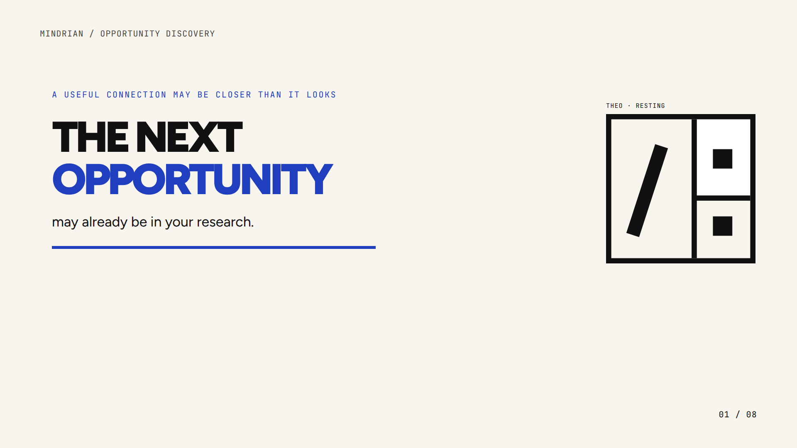
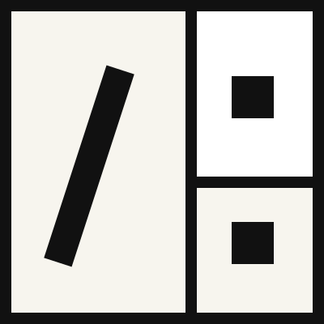

01 · The hidden opportunity
0:00–0:05Hook
“Some of the most valuable opportunities are hiding in research we already have.”
A 60-second narrated story showing the intended Mindrian workflow: bring a research room into focus, choose methods for the question, inspect evidence, and keep useful opportunities alive over time.


“Some of the most valuable opportunities are hiding in research we already have.”

“But sources sit in separate files. Connections get missed. And one report rarely becomes a growing body of work.”

“Mindrian is being built to turn a research room into an opportunity portfolio.”

“Bring in the material. Set the question, constraints, and outcome that matter.”

“The goal is to use methods that fit the job: map bottlenecks, explore connections, gather evidence, and challenge a promising lead.”

“Each candidate can stay linked to its sources, with uncertainty and counterevidence visible. You decide what to investigate, what to test, and what to set aside.”

“Then the room keeps the useful work: evidence, open questions, decisions, and next experiments.”

“So each new question starts from what you’ve already learned. Mindrian helps turn scattered research into opportunities people can revisit, deepen, and act on.”